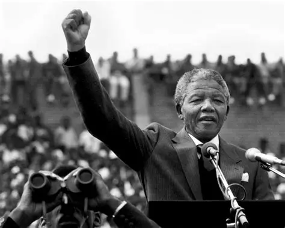

1918
Born in Mvezo
Nelson Rolihlahla Mandela was born on 18 July in Mvezo in South Africa's Eastern Cape.
A life dedicated to freedom, equality and the pursuit of a better South Africa.
Discover His Story
Biography
Nelson Rolihlahla Mandela was born on 18 July 1918 in Mvezo, South Africa. He grew up in the Eastern Cape and later studied law, beginning a journey that would eventually make him one of the world's most recognised advocates for equality and human dignity.
Mandela became involved in political activism as South Africa's system of apartheid increasingly restricted the rights and freedoms of the country's non-white population. He joined the African National Congress and became an important figure in the struggle against racial discrimination and apartheid.
His political activities resulted in repeated arrests and, in 1964, he was sentenced to life imprisonment. Mandela spent 27 years in prison, much of that time on Robben Island. Despite the harsh conditions, his imprisonment strengthened his international reputation as a symbol of resistance to apartheid.
Mandela was released from prison on 11 February 1990. He participated in negotiations that helped bring an end to apartheid and establish a democratic political system. In 1994, South Africa held its first democratic national election in which citizens of all races could vote, and Mandela became the country's first Black president.
After leaving the presidency in 1999, Mandela continued supporting humanitarian causes and promoting peace, education and social justice. His life remains closely associated with perseverance, reconciliation and the pursuit of a more equal society.
It always seems impossible until it's done.
— Nelson Mandela
His Journey
Nelson Rolihlahla Mandela was born on 18 July in Mvezo in South Africa's Eastern Cape.
Mandela helped establish the African National Congress Youth League and became increasingly involved in the struggle against racial inequality.
Following the Rivonia Trial, Mandela and several other defendants were sentenced to life imprisonment.
After spending 27 years in prison, Mandela was released on 11 February 1990.
Mandela and F. W. de Klerk jointly received the Nobel Peace Prize for their efforts toward a peaceful transition from apartheid.
Mandela became South Africa's first Black president following the country's first fully democratic national election.
After serving one presidential term, Mandela stepped down and continued working on humanitarian causes.
Mandela died on 5 December 2013 at the age of 95, leaving a legacy recognised around the world.
Achievements
Awarded jointly with F. W. de Klerk in 1993 for efforts toward ending apartheid peacefully.
Became South Africa's first Black president after the historic democratic election of 1994.
His presidency placed significant emphasis on reconciliation as South Africa transitioned away from apartheid.
Mandela became an internationally recognised figure associated with human rights, dignity and peaceful political change.
Remembering Madiba
Nelson Mandela's story demonstrates how courage, perseverance and a commitment to human dignity can contribute to lasting social change.